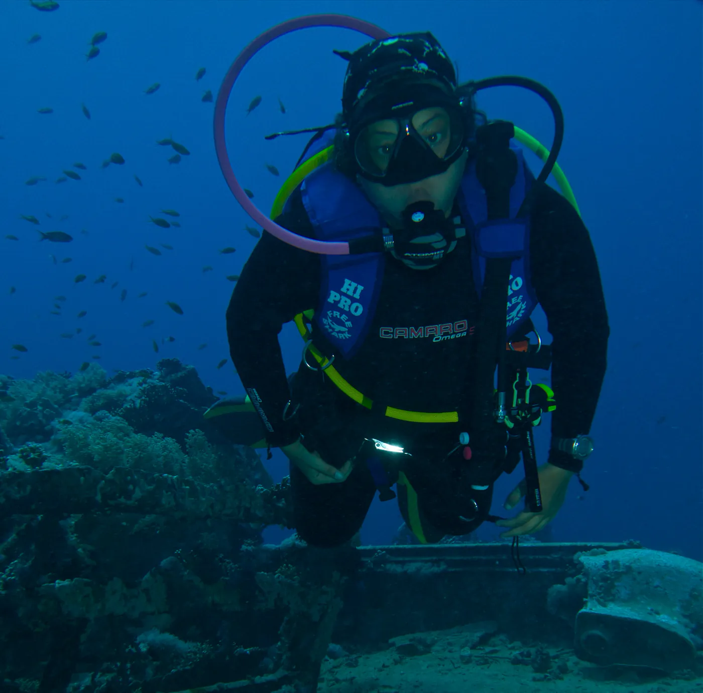
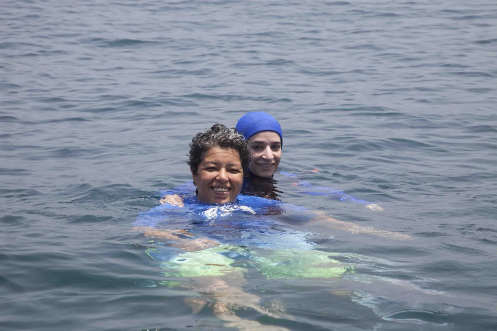
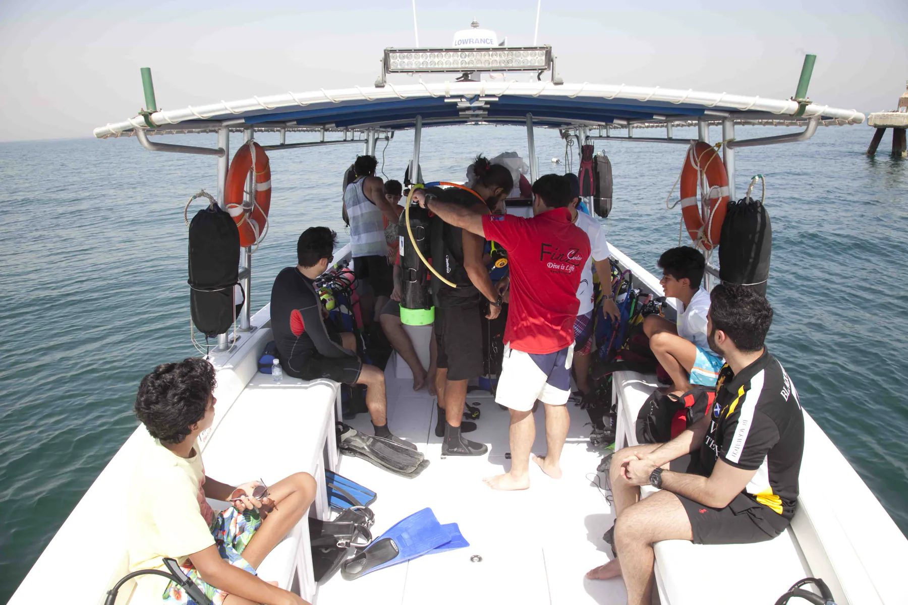
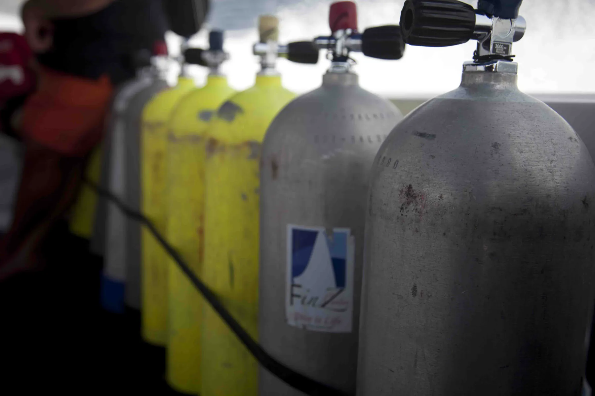
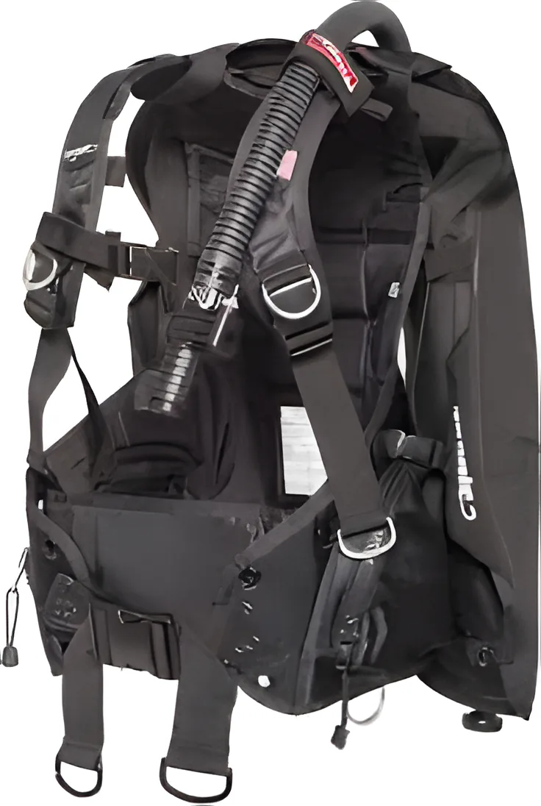
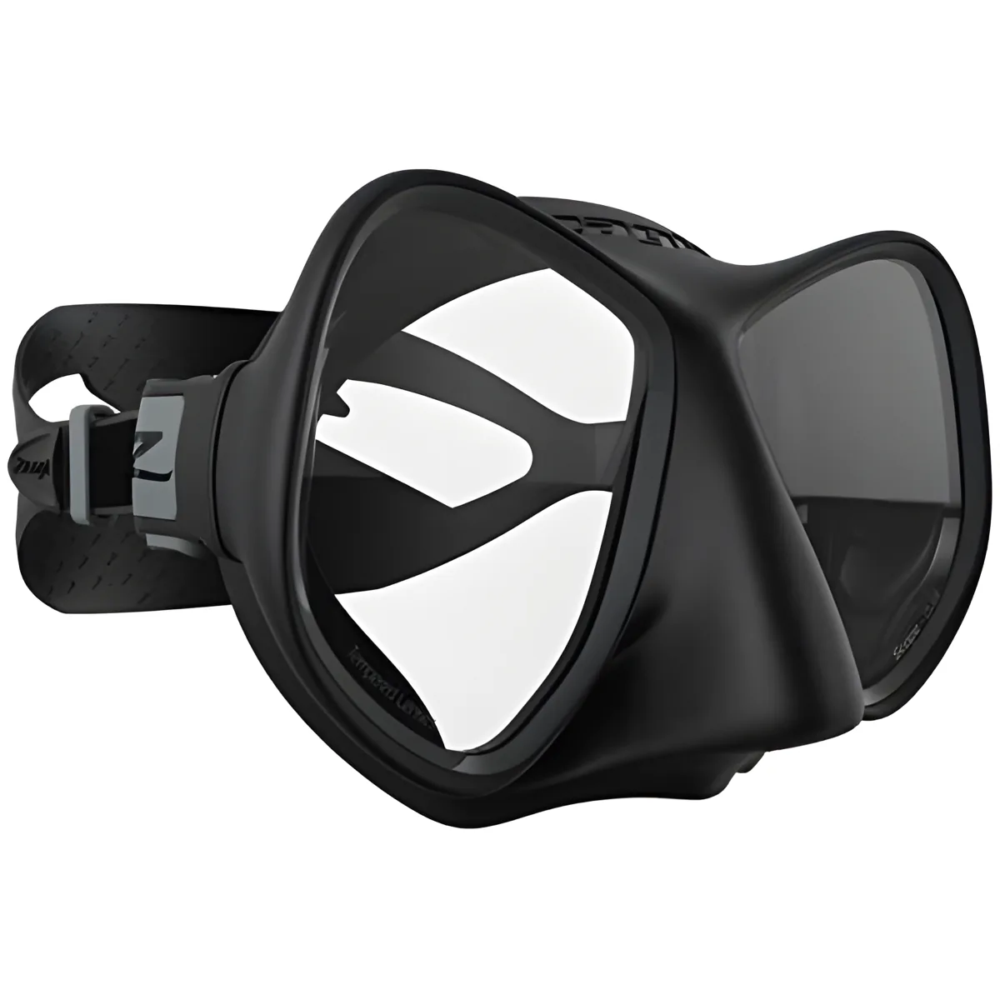
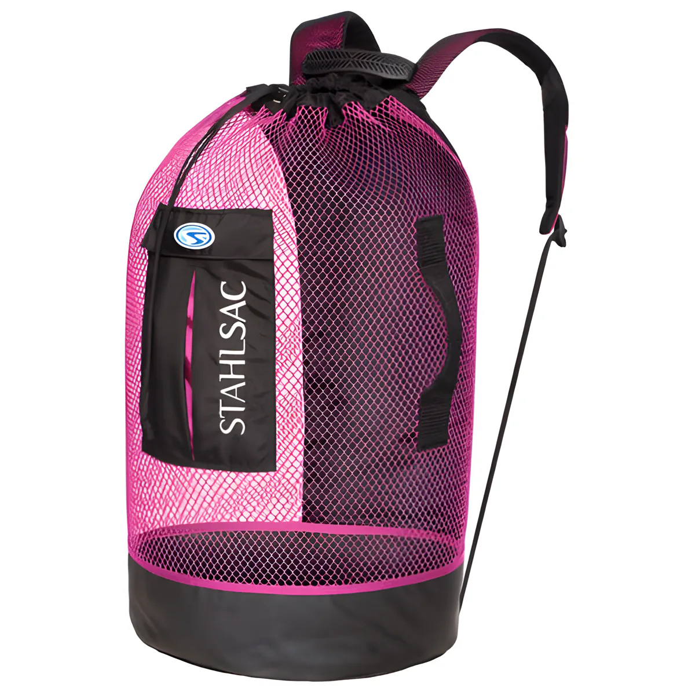
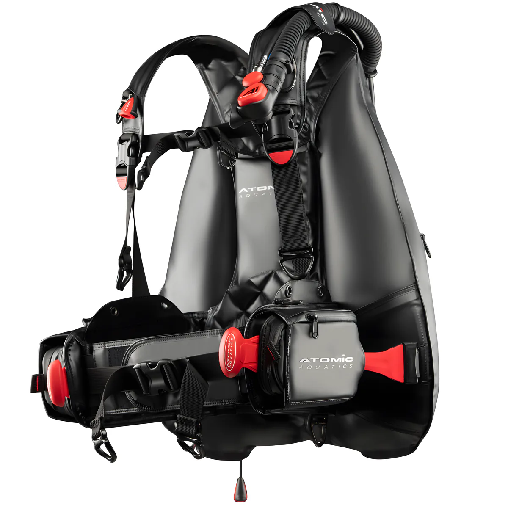
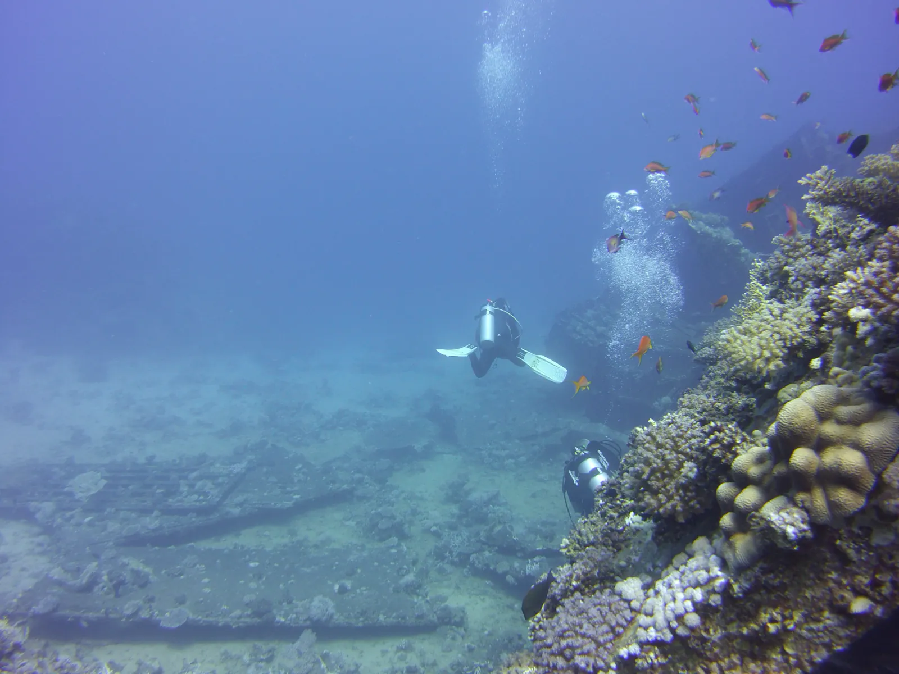

Courses, tripsand the shop
Everything FinZ Center does, with the ages, times and what each course needs before you start. Ask on WhatsApp for the next dates.
PADI courses
All our instructors are PADI professionals. Most courses mix pool sessions with dive trips at sea, and the theory can be done online with PADI eLearning, at home, or in our classroom.
01Discover Scuba DivingAge 10+ · about 3 hrs · 1 day · pool
Find out what diving is really like before you sign up for a full course. You learn the basic principles, get an overview of the gear and try some basic skills in the swimming pool. No experience needed.
- Minimum age
- 10, physically fit
- Time
- About 3 hours, 1 day
- Where
- Swimming pool
02Open Water DiverAge 10+ · 7 days · 2 pool days + 2 dive trips
The world's most popular scuba course, and your first certification. It has three parts:
- Knowledge development, online, home study or in a classroom, to understand the basic principles of diving
- Confined water dives to learn the basic scuba skills
- Open water dives to review your skills and explore
- Minimum age
- 10, physically fit
- Time
- About 3 hrs a day for 7 days
- Pool
- 2 days
- Sea
- 2 dive trips, 2 dives each
03Advanced Open Water DiverAge 12+ · 4 days · 2 dive trips
Builds your confidence and your scuba skills so you're more comfortable in the water, and introduces new kinds of dives.
- Minimum age
- 12, physically fit
- Needs
- Open Water Diver
- Time
- About 2 hrs a day for 4 days
- Sea
- 2 dive trips, 3 dives each
04Emergency First ResponseAge 12+ · 3 days · for anyone
First aid and CPR, useful for anyone in adventure sports and needed for the Rescue Diver course. You don't have to be a diver.
- Basic life support: CPR and rescue breathing
- AED (defibrillator) use, optional
- Preventing and caring for shock
- Spinal injury management
- Using barriers to reduce the risk of infection
- Basic first aid and first aid kits
- Minimum age
- 12
- Time
- About 3 hrs a day for 3 days
05Rescue DiverAge 12+ · 4 days · 1 pool day + 2 dive trips
Learn to prevent problems, and how to manage them if they happen.
- Self rescue
- Recognising and managing stress in other divers
- Emergency management and equipment
- Rescuing panicked divers
- Rescuing unresponsive divers
- Minimum age
- 12, physically fit
- Needs
- Open Water + EFR
- Time
- About 3 hrs a day for 4 days
- Sea
- 2 dive trips, 2 dives each
06DivemasterAge 18+ · 1 month · 5 pool days + 8 dive trips
The professional level of recreational diving. You work closely with an instructor and learn to plan, organise and supervise dives, and to assist instructors with student divers.
- Supervise training and non-training dives
- Assist an instructor on any diver course
- Run the Skin Diver course, Discover Snorkeling and Scuba Review
- Guide Open Water students on the tour part of training dives 2, 3 and 4
- Teach Emergency First Response after the EFR Instructor course
- Minimum age
- 18, physically fit
- Needs
- Rescue Diver + valid EFR
- Time
- About 3 hrs a day for 30 days
- Sea
- 8 dive trips, 2 dives each
07Master Scuba Diver and specialtiesSpecialty courses, Reef/Coral Watch, up to Instructor level
We also run different types of specialty courses, the Master Scuba Diver rating and the Reef/Coral Watch course, and train leadership levels up to Instructor. Tell us where you are now and we'll tell you what's next.
Ask about specialties on WhatsAppWhat you learn on most courses
- 01Principles of scuba diving
- 02Assembling and taking apart your gear
- 03Safety precautions and techniques
- 04Confined water dives
- 05Open water dives
- 06Underwater technique

For kids
Two pool programmes run by certified PADI professionals. Children should be comfortable in the water, but they don't need to be strong swimmers.
ABubblemakerAge 8+ · about 3 hrs · max depth 2 m
A first breath underwater, in the pool, in less than two metres of water, with kit made for children, not adults. A good birthday party idea too, for friends and family.
BPADI Seal TeamAge 8+ · about 5 hrs a day for 2 days · pool
Action-packed AquaMissions in the pool. Part one teaches the basics: buoyancy, mask clearing, regulator recovery. Part two is specialty AquaMissions of about an hour each. Teaches responsibility and the aquatic environment.

Trips
Leisure trips at the weekend, for certified divers, snorkellers and non-divers. Sites in our logbook include Kubbar Island (day and night dives), Arifjan Reef, Taylor's Rock, Om Al-Maradem Island and Garooh.
- Day dive trips
- Snorkelling trips
- Island trips and cruises
- Fishing cruises
- Dive holidays
- Trip membership, special packages

Shop and rental
Equipment sales and rental. We're the exclusive agent for diving equipment from the USA, Italy and Austria, and stock masks, fins, regulators, BCDs, computers, wetsuits, bags and camera gear.
Atomic Aquatics · Dive Rite · Camaro · Free Shark · SeaLife · Poseidon · The SCAP · H2O Tanks · Ocean Dry Pack · Stahlsac · Zeagle · SharkSkin · Geckobrands · GoPro accessories · Seaplay · Shark Crafts · Living One Love · Innovative Scuba Concepts
Ask about stock or rental
Zeagle Scout BCD, LG
120.000 KWD

Scope Dual mask
36.000 KWD

Panama mesh bag, pink
25.000 KWD

Atomic BC2, XL
480.000 KWD

Reef work
Reef clean-ups and marine conservation, and the Reef/Coral Watch course for divers who want to know more about the reefs they dive.
Join a clean-upNot sure where to start?
Tell us your age and whether you've dived before. We'll point you to the right course.